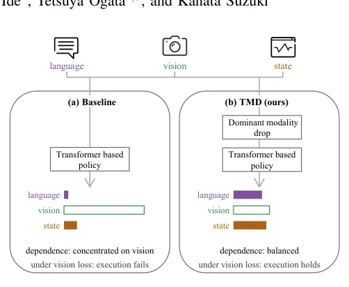
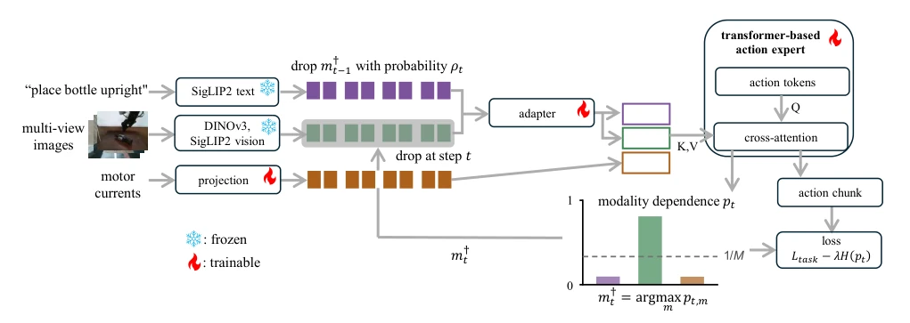
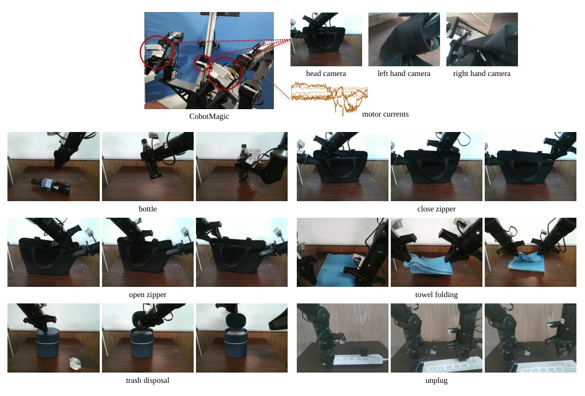
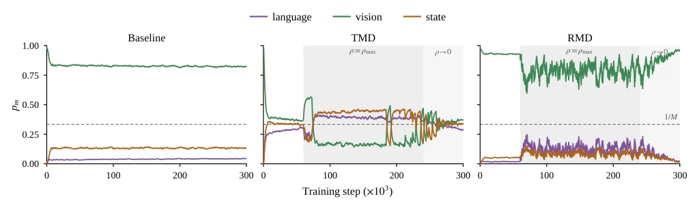
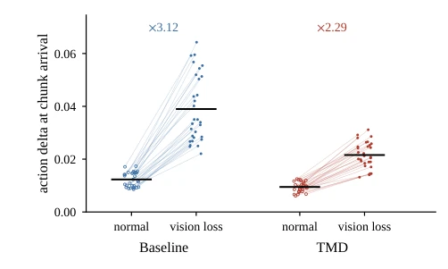

This work essentially treats the 'fragility' of multimodal embodied intelligence. In reality, camera failure is common, but policies often over-rely on vision and fail completely when disconnected. The authors did not use fancy simulations, but went straight to real dual-arm robots, which is commendable. The core is Targeted Modality Dropout, targeting the strongest modality for dropout, and adding entropy regularization to force the model to utilize all modalities evenly. Experimental results indeed prove robustness; Baseline's success rate plummets with slight visual loss, while TMD can withstand it. However, a critique is that a sample size of N=5 is a bit small in the robotics field, and statistical significance is questionable. Additionally, the compared RMD changed both the random policy and removed regularization, making it hard to distinguish whether 'targeted' is useful or 'regularization' is useful. But verifying in a real closed-loop is better than pure simulation, counting as a solid engineering improvement. If the sample size can be expanded and variables separated in the future, persuasiveness will be stronger.
Although multimodal imitation learning can integrate information such as vision, language, and force, policies often exhibit 'greediness' during training, over-relying on the information-rich visual modality [4]. This bias leads to severe impairment of policy execution once vision is lost during inference. Although existing modality Dropout methods can randomly remove modalities [5, 6], they cannot identify which modality is dominant, and thus cannot correct this bias. Furthermore, existing research mostly evaluates robustness to missing modalities on classification benchmarks or in simulation environments [15, 16], rarely examining cases of random visual loss during real robot closed-loop execution. This leads to actual risks for policies in real deployment, such as camera failure or occlusion. Therefore, a method capable of dynamically identifying and suppressing dominant modality dependence is needed to improve robustness in real-world scenarios.
The method is based on a Vision-Language-Action model with a Transformer architecture. The overall process is divided into three parts: dependency estimation, targeted Dropout, and entropy regularization. First, the dependency degree $p_{t,m}$ for each modality is calculated by aggregating Cross-Attention weights, quantifying the strategy's dependence on language, vision, and state (motor torque). Second, Targeted Modality Dropout (TMD) is implemented; during training steps, based on the dependency estimated at the previous time step, the modality with the highest dependency is selected as the target, and its Token is zeroed out with probability $
ho_t$. This probability $
ho_t$ follows a scheduling strategy, starting at 0 in the early training phase, rising to a maximum in the middle phase, and decaying back to 0 in the later phase. Finally, an entropy regularization term $H(p_t)$ is introduced into the loss function to maximize the entropy of the dependency distribution, preventing dependence from concentrating too much on a single modality. This mechanism forces the model to actively learn to utilize non-dominant modalities during training, thereby maintaining execution even if the dominant modality is lost during inference.
Experiments were conducted on a real dual-arm robot CobotMagic, including 6 manipulation tasks, such as opening/closing zippers, folding towels, etc. Three conditions were compared: Baseline (no Dropout), TMD (this paper's method), RMD (random modality Dropout). The evaluation metric was task success rate, conducted under normal settings and visual loss settings (10% probability). Results show that Baseline's success rate dropped from 14/30 to 2/30 during visual loss, while TMD remained at 15/30. RMD performed poorly even under normal settings, only 4/30. Action perturbation analysis indicates that the increase in action delta for TMD during visual loss is smaller than that of Baseline. This indicates that TMD not only improved success rate but also reduced instability in action generation. However, the sample size N=5 limits statistical power, and the difference between RMD and TMD may be confounded by the effect of regularization.
其他图片Other Figures

Fig. 1. Overview of the problem and of the proposed method. Three modalities feed one policy. (a) Under ordinary training the dependence, estimated from attention, concentrates on vision. (b) TMD drops whichever modality is dominant during training, and the dependence balances. The bars are the estimated dependence at the end of training, with the vision bar left unfilled to mark what inference-time loss removes.

Fig. 2. Overview of the proposed method during training. Language and vision tokens are encoded by frozen pretrained encoders and integrated by a trainable adapter, while state tokens are projected and joined directly, so that the key/value memory of the action expert contains the tokens of all three modalities. Because the adapter attends across the language and vision tokens, each of its output tokens carries information from both, so the dependence on these two modalities is not measured on fully independent representations. The dependence pt drives two mechanisms: the tokens of m† t−1 are zeroed in a subset of samples, and the entropy of pt enters the loss. In the step drawn here, vision is the target, so its token row is shaded and its tokens are dimmed. See Algorithm 1 for the order

Fig. 3. Top: modalities the policy receives from the bimanual manipulator CobotMagic: images from the head and the left- and right-hand cameras, taken at the moment when the slider of the fastener is grasped to close the zipper, and the motor currents. Bottom: six tasks used for real-world evaluation: bottle, close zipper, open zipper, towel folding, trash disposal, and unplug.

Fig. 4. Trajectory of the modality dependence pt,m during training, for each condition. The three modalities are overlaid in each panel; curves are exponential moving averages. The dashed horizontal line marks the uniform level 1/M ≃0.33, and the shaded band marks the interval in which the dropout probability ρt is nonzero (Baseline applies no dropout).

Fig. 5. Action delta at chunk arrival, in the normal setting and under vision loss, for each of the 30 trials per condition. Open and filled markers indicate the same trial, connected by a line, and horizontal bars are condition means. For both conditions, the action delta is larger when the chunk was generated under vision loss, with a smaller increase for TMD: the mean within-trial ratio of the two values, marked by ×, is 3.12 for Baseline versus 2.29 for TMD. Action delta is the sum over the two arms of the L2 norm of the change in the commanded action vector between adjacent steps; the action vector comprises the six joint angles and the gripper command and is reported in arbitrary units.